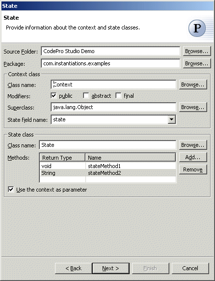

State Pattern
Also known as: Objects for StatesThe  State Pattern allows an object to alter its behavior when its internal
state changes. The key idea is to introduce an abstract class whose subclasses
represent the possible internal states, and have the object delegate to
an instance of one of these subclasses where appropriate.
State Pattern allows an object to alter its behavior when its internal
state changes. The key idea is to introduce an abstract class whose subclasses
represent the possible internal states, and have the object delegate to
an instance of one of these subclasses where appropriate.
Wizard
Applicability
Additional Resources
Wizard
| Option | Description | Default |
| Source folder | Enter a source folder for the new classes. Either type a valid source folder path or click Browse to select a source folder via a dialog. | The source folder of the element that was selected when the wizard was started. |
| Package | Enter a package to contain the new classes. Either type a valid package name or click Browse to select a package via a dialog. | The package of the element that was selected when the wizard was started. |
| Context class name | Enter a name for the new context class. | <Context> |
| Modifiers | Select one or more access modifiers for the new class:
|
public |
| Superclass | Type or click Browse to select a superclass for the context class. | <java.lang.Object> |
| State field name | Type a name for the field that holds the current state. | <state> |
| State class name | Type or click Browse to select the class to be used as the implementation class | The type or the primary type of the compilation unit that was selected when the wizard was started |
| Method | Click Add to enter the return types and names of the methods that the state class should implement. | <blank> |
| Use context as parameter | Determines whether to use the context as a parameter to each state method. | <true> |
Wizard
| Option | Description | Default |
| Subclass names | Click Add to enter the names of the concrete state subclasses that should be created. | <blank> |
| Initial state | Select the name of the class representing the initial state. | The first class in the list |
| Use singleton subclasses | Determines whether to use just single instance of each state subclass. | <true> |
Applicability
Use the State pattern when- an object's behavior depends on its state, and it must change its behavior at run-time depending on that state.
- operations have large, multipart conditional statements that depend on the object's state. This state is usually represented by one or more enumerated constants.
Additional Resources
http://c2.com/cgi/wiki?StatePatternhttp://www.wikipedia.org/wiki/State_pattern